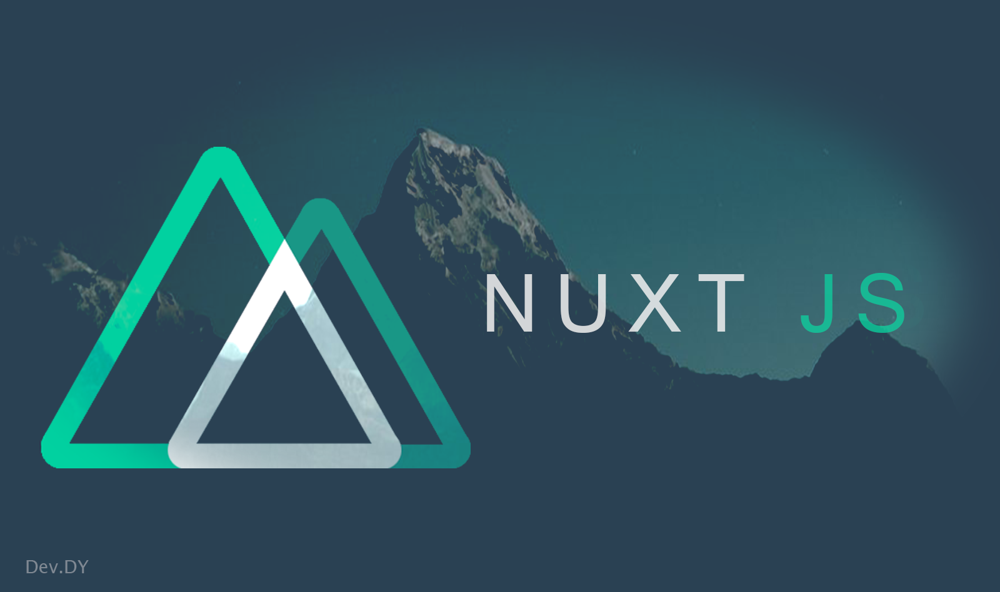

Nuxt.js 개념부터 설치까지 빠르게 배우기

이번 포스팅에서는 Vue.js Application을 쉽게 생성하고 만들 수 있는 프레임 워크인 Nuxt.js에 대해서 알아볼까 한다.
Nuxt.js는 React의 Next.js에서 영감을 받아 진행된 프로젝트로 온전히 겉으로만 본다면 프레임워크이기 때문에 leaning curve가 있을 것 같지만 사실상 그렇지는 않다. Nuxt.js를 설치하고 사용해 본다면 그저 Nuxt.js는 Vue.js를 사용할 때 하나하나 작업해줘야 할 요소들을 생성해주고 처리해주는 것임을 알 수 있다.
본 포스팅으로 써 Nuxt.js 도입에 고민하는 개발자에게 도움이 되었으면 한다. 장담하건데 Nuxt.js를 1년간 사용한 개발자로써 적극 추천하며 프로젝트에 도입해도 문제가 되지 않음을 알려주고 싶다.
본격적으로 Nuxt.js에 대해서 알아보자.
Nuxt.js 소개
먼저 Nuxt.js의 공식 사이트 이다. Vue.js와 마찬가지로 한국어 문서가 존재하지만 Nuxt.js의 발빠른 업데이트에 한국어 문서가 따라가지 못하는 것 같다. Vue.js 역시 동일하지만.. 그렇다고 번역하시는 분을 욕하는 게 아니라 그만큼 Nuxt.js의 활동이 활발하다는 이야기이다. 아무튼 이러한 이유로 영문본으로 보기를 바란다.
Nuxt.js의 소개를 본다면 이렇게 명시하고 있다.
어려운 말들이 많을 수 있겠지만 아직도 Nuxt.js를 사용을 해야 할지 말아야 할지 고민하는 당신을 위해 쉽게 설명을 해본다면 이렇다.
Nuxt.js의 활동성
Nuxt.js의 활용성과 기능이 아무리 좋다고 하더라고 결국 MIT 라이센스를 가진 오픈 소스이다. 오픈 소스의 단점은 버그 픽스를 하지 않고 버전 업데이트가 거의 없다면 사용할 수 없다는 것이다. 하지만 nuxt.js의 업데이트 주기는 매우 빠르다. (요즘 들어 더 빨라진 듯….). 해당 포스트 작성자는 Nuxt.js를 1.0.0-rc 버전부터 프로젝트에 도입하였고 현재 버전은 2.4.3을 사용하지만, 이제는 업데이트된 버전으로 마이그레이션하기가 힘들 정도로 업데이트 주기가 빠르다. 포스트 작성 날짜 기준으로 현재 Nuxt.js의 버전은 2.5.0이다.
아래 표를 통해 현재 nuxt.js가 얼마나 업데이트가 활발한지 확인해 보자. Nuxt.js의 버전 계획은 Nuxt.js Realease Plan에서 확인이 가능하다.
| 버전 | 업데이트 날짜 |
|---|---|
| v1.0.0-rc6 | 2017-08-22 |
| v1.0.0-rc7 | 2017-08-29 |
| v1.0.0-rc8 | 2017-08-31 |
| v1.0.0-rc9 | 2017-09-06 |
| v1.0.0-rc10 | 2017-09-07 |
| v1.0.0-rc11 | 2017-09-07 |
| v1.0.0 | 2018-01-09 |
| v1.1.0 | 2018-01-13 |
| v1.0.1 | 2018-01-13 |
| v1.2.0 | 2018-01-26 |
| v1.2.1 | 2018-01-26 |
| v1.3.0 | 2018-02-01 |
| v1.4.0 | 2018-03-02 |
| v1.4.1 | 2018-08-02 |
| v1.4.2 | 2018-08-02 |
| v1.4.1 | 2018-08-02 |
| v1.4.4 | 2018-10-19 |
| v1.4.5 | 2018-11-28 |
| v2.0.0 | 2018-09-21 |
| v2.1.0 | 2018-10-01 |
| v2.2.0 | 2018-10-14 |
| v2.3.1 | 2018-11-17 |
| v2.3.2 | 2018-11-21 |
| v2.3.4 | 2018-11-27 |
| v2.4.0 | 2019-01-09 |
| v2.4.2 | 2019-01-30 |
| v2.4.3 | 2019-02-07 |
| v2.4.5 | 2019-02-26 |
| v2.5.0 | 2019-03-21 |
Nuxt.js 설치
Nuxt.js 팀이 스캐폴딩 해둔 템플릿을 사용하려면 create-nuxt-app을 npx를 통해서 설치하면된다. npx는 NPM 5.2.0 버전 이후 기본적으로 제공되기 때문에 별도로 설치할 필요는 없다.
Node.js에 대해서 빠르게 배우는 Node.js와 NPM 설치부터 개념잡기를 참고하자.
npx를 통한 Nuxt.js 설치
1 | $ npx create-nuxt-app <project-name> |
위와 같이 실행을 하게 되면 몇 가지 질문들이 나오는데 진행하는 프로젝트에 맞게 선택하여 설치하면 된다.
vue-cli를 통한 Nuxt.js 설치
Nuxt.js 버전이 올라가기 전에는 nuxt starter-template을 vue-cli를 통해서 설치하였다. CLI가 아닌 ZIP 파일로 받아 압축을 풀어도 된다.
먼저 vue-cli를 설치하자. vue-cli에 대해서는 Vue CLI 공식 사이트를 참고하자.
1 | $ npm i -g @vue/cli |
그다음으로 template를 설치하고 npm module을 설치하면 된다.
1 | $ vue init nuxt-community/starter-template <project-name> |
offline 설치 방법
간혹 당신이 속한 소속에서 보안상 문제로 해당 사이트나 커맨드를 차단하여 nuxt-community에 속한 tempate을 vue-cli로 설치가 되지 안는 경우가 있다.
이런 경우에는 offline으로 설치가 가능하다.
우선 사용자 경로에 .vue-templates 폴더를 하나 생성하자.1
C:\Users\사용자이름\.vue-templates
그다음 Starter-Template의 Github에서 해당 소스를 clone을 받고 위에서 생성한 폴더로 옮겨놓자.
1 | $ git clone https://github.com/nuxt-community/starter-template |
이 상태로 우리는 vue-cli를 통해서 github가 아닌 로컬에 저장된 템플릿을 사용할 수 있다.
1 | $ vue init starter-template <project-name> --offline |
Nuxt.js 단일 설치
Nuxt.js 단독으로 설치할 경우엔 아래와 같이 명령어를 실행한다.
1 | $ npm i nuxt |
Nuxt.js 디렉토리 구조
Nuxt.js의 기본 템플릿을 사용하였다면 이미 스캐폴딩이 되어 있을 것이다. 만약 단일로 Nuxt.js를 설치하였다 하더라도 해당 섹션을 보아야 하는 이유는 Nuxt.js 자체 내에서 필수로 있어야 하는 폴더들이 있기 때문이다.
디렉토리 구조를 파악해 보자.
assets
css, image, font와 같은 리소스들을 포함한다.
components
애플리케이션에서 사용될 컴포넌트들을 포함하며 해당 경로에 위치된 컴포넌트들은 Nuxt.js의 비동기 데이터 함수인 asyncData또는 fetch를 사용할 수 없다.
layouts
애플리케이션 전체에 대한 레이아웃을 포함한다. 기본으로 default.vue가 생성되어 있을 것이고 상황에 맞게 layout을 생성할 수 있다. 해당 디렉토리는 이름을 변경할 수 없다.
middleware
애플리케이션에서 사용될 middleware를 포함한다. middleware는 페이지 또는 레이아웃이 렌더링 되기 전에 실행이 되며, middleware를 페이지나 레이아웃에 바인딩하였다면 해당 페이지나 레이아웃이 실행되기 전에 매번 실행된다.
pages
실제 애플리케이션의 페이지 구성을 포함하며 해당 디렉토리의 구조에 따라 router가 자동으로 생성된다. 해당 디렉토리는 이름을 변경할 수 없다.
plugins
애플리케이션에 바인딩 될 외부 혹은 내부 plugins를 포함한다.plugins는 애플리케이션이 인스턴스 화 되기 전에 실행하며 전역적으로 구성 요소를 등록하고 함수 또는 상수를 삽입할 수 있다.
static
해당 디렉토리는 정적인 파일들을 포함한다. 구성에 따라서 html, Javascript 파일도 포함 시킬 수 있다. 해당 디렉토리는 이름을 변경할 수 없다.
store
애플리케이션에서 사용될 vuex store 파일들을 포함한다. 기본적으로 비활성화 상태이고 store 디렉토리에 index.js 파일을 작성하면 store가 활성화된다. 구성에 따라서 모듈 형태의 store를 형성할 수 있다. 해당 디렉토리는 이름을 변경할 수 없다.
Nuxt.js 실행
최초 템플릿을 설치하면 커맨드는 4가지가 존재한다.
| COMMAND | 설명 |
|---|---|
| dev | 개발 서버를 Hot-reloading 상태로 localhost:3000으로 실행된다. |
| build | Webpack을 통해 애플리케이션을 빌드한다. |
| start | 프로덕션(배포)모드로 서버를 시작한다.(build 실행 후 진행된다.) |
| generate | 애플리케이션을 빌드하고 모든 라우트를 HTML 파일로 생성한다.(정적 호스팅) |
지금까지 설치를 진행했으니 실행을 해보자.
1 | $ npm run dev |
설명대로 localhost:3000으로 접속하여 실행된 페이지를 확인해보자.
Nuxt.js 개발 서버 Host/Port 변경
개발 서버는 기본 localhost와 Port는 3000로 잡혀져 있지만, 해당 값을 변경하는 방법에는 몇 가지가 있지만 가장 기본적이고 보편적으로 사용되는 방법은 npm script를 수정하는 방법이다.
1 | $ nuxt --hostname <host> --port <port> |
하지만 이런 경우는 드물고 우리는 이미 package.json에 명시되어 있기 때문에 package.json을 수정하자.
1 | { |
Nuxt.js Module
여기까지 Nuxt.js를 설치하고 초기 상태까지 왔지만 앞으로 더 해야 할 일이 많을 것이다. 그중 가장 많이 처리되는 게 API 통신을 위한 Axios의 설치와 로컬 환경에서 CORS문제를 해결하여 개발을 하기 위한 proxy의 설치이다.
이 둘 다 plugins를 통해 설치하고 삽입할 수 있지만, 해당 포스트는 Nuxt.js 사용을 위한 포스트이기 때문에 plugins가 아닌 Nuxt.js의 Module 시스템을 설명하려 한다.
Nuxt.js Module은 핵심 기능은 확장하고 통합할 수 있는 Nuxt.js의 확장이다. 직접 Custom 하게 모듈을 만들 수 있으며, 이미 만들어진 모듈을 가져다 쓸 수 있다.
Axios/Proxy Module 사용
Axios는 http 통신을 위해 사용되는 훌륭한 오픈 소스이다. 물론 Nuxt.js를 사용할 때 직접이 Axios를 사용해도 무방하다. 하지만 이 Axios를 가지고 Nuxt.js의 모듈화로 만들어진 것 있다. 우리는 그 Axios module을 사용해보자. Axios를 기반으로 생성된 모듈이라 Axios API를 참고해도 무방하며, Axios의 경량화로 볼 수 있다. Axios 모듈은 Proxy 모듈과 통합이 가능하기 때문에 Proxy 모듈도 같이 설치를 하자.
설치는 NPM으로 진행하자.
1 | $ npm i @nuxtjs/axios |
nuxt.config.js를 열어 설치된 모듈을 import 하자.
1 | module.exports = { |
위 처럼 proxy 옵션에 url-prefix를 지정하게 되면 /prefix-url로 시작되는 API는 모두 proxy-url로 Proxy 된다.
이제부턴 Axios의 사용이 가능하며 심지어 proxy까지 연동이 되어 있다.
Module 생성하기
이번에는 간단하게 console.log를 nuxt의 module로 직접 만들어보자.
먼저 프로젝트 Root 경로에 modules 폴더를 만들어 보자. 명칭은 상관없다. 그다음 logs.js와 logs.template.js 파일을 생성하자.
module을 생성하는데 필요한 파일은 두 가지이다.
logs.js
logs.js에서는 module의 사용될 템플릿 역할을 하는 소스를 실제 nuxt 인스턴스에 삽입하는 과정을 한다.
1 | const path = require('path') |
logs.template.js
logs.template.js는 실제 비즈니스 로직이 코딩되며 프로토타입의 명칭을 정한다.
1 | export default (ctx, inject) => { |
사용
우리는 logs.template.js에서 inject에 log라고 정의를 하였고 nuxt 프로토타입에 삽입하였기 때문에 사용 시에는 log 앞에 $를 붙여서 사용하면 된다. 실제로 this를 확인해 보면 $log가 생긴 것을 확인해 볼 수 있다.
1 | this.$log('test log') |
Root Source 디렉토리 변경하기
현재의 디렉토리 구조를 보면 layout, pages, components 등 모든 폴더가 root 경로로 지정되어있다. 하지만 결국 우리는 어떤 프로젝트에 Nuxt.js를 도입을 하게 되면 현재의 디렉토리 구조대로 쓰지 못할 경우가 발생된다. 예를 들어 root의 경로를 App으로 지정해보자.
디렉토리 구조는 다음과 같다.1
2
3
4
5
6
7
8
9
10
11- App
- assets/
- components/
- layouts/
- middleware/
- pages/
- plugins/
- static/
- store/
- node_modules/
- package.json
위 구조를 보면 모든 리소스는 App 경로 하위에 존재한다. 이럴 경우 우리는 source directory를 수정해줄 필요가 있다.
nuxt.config.js 파일을 열어 수정해주자.
1 | module.exports = { |
Nuxt.js 는 스캐폴딩부터 Vue.js를 사용하면서 귀찮은 작업을 대신해 주기에 많이 사용하고 있다. 다만 좀 어려운 점은 처음에 제공되는 템플릿에서 좀 더 확장성을 가진 구조를 만들기 위해서는 nuxt.config.js의 옵션들을 자세히 알아야 하고 수정해야 한다는 점이다. nuxt.js에서 옵션이 워낙 많다 보니 프로젝트 구조를 잡을 때는 API 문서를 항상 열어 두는 것이 좋다.
해당 포스트는 Nuxt.js의 기초를 다루려고 하였지만 Nuxt.js의 API가 워낙 잘 되어있나 보니 불필요한 내용이 끼워지게 되었다. 다음 포스트에서는 Nuxt.js에서 middleware 처리를 어떻게 하는지, 또 pages 구조를 어떻게 잡아야 vue-route의 기능을 사용할 수 있는지 등에 대한 좀 더 깊이 있게 다루는 포스트를 올리도록 하겠다.